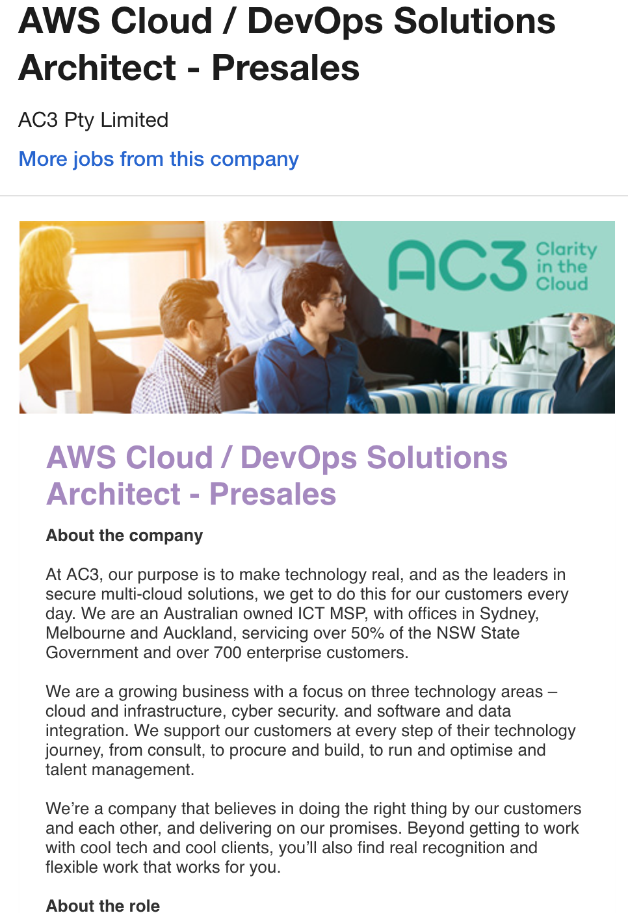
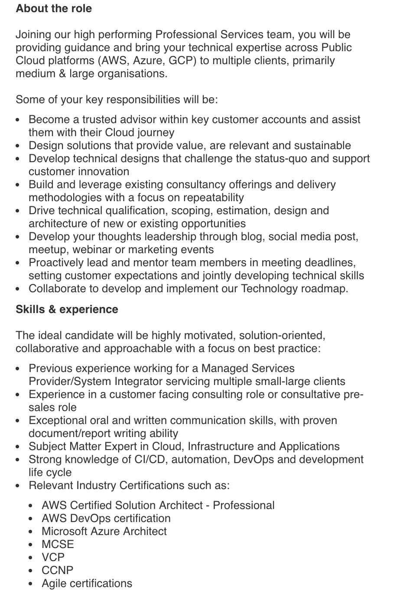

Dream Job: Solution Architect

Example of Job
 AWS Cloud / DevOps Solution Architect
This role appeared while I was on the job website Seek. This is a relatively high level role that requires many years of experience and industry certifications. The job requires the individual to design and manage the cloud architectural solution for its many stakeholders. A small snippet of this includes:
- Designing cloud solutions on public cloud platforms such as AWS, Microsoft Azure
- Leading and managing teams and different stakeholders
- Providing consultation to large stakeholders by creating technology roadmaps.
Job Appeal
The job is appealing because it is a combination of technical and non-technical responsibilities. It requires the individual to work collaboratively with others and have relevant industry experience. Because there is such a strong technical focus in this role, it requires the individual to be up to date with industry standards, meaning I were to pursue this role, I would have to do additional training. This is appealing to me because I constantly love learning, especially about technology and what is out there in the market.
I like the idea of working with others. This job also requires the individual to work with a bunch of different stakeholders. I don’t want a purely technical role, I would get bored of it very quickly. The AWS side of this was particularly interesting because it delves into the automation space. I feel like automation is the way of the future, so having a foot in that area would be beneficial in the long run.
Qualifications: Me vs Job
Honestly, this is a very senior role. At this point I do not possess any certifications or training to be eligible for this role. Kind of depressing but, it’s not unreachable. Microsoft and AWS training is easily available to individuals. They have study modules and exams for their certifications. In order for me to be eligible I would to take up the following courses, as detailed by the job description:
Some Required Training:
Plan for the Future: Obtaining these Qualifications
There are two things I need to take into consideration when trying to gain these certifications. Time and money. As I am working full time, I would have to make sure that I finish my degree first before I pursue additional certifications. When I do pursue them, I will need to make sure I am able afford the training material for these exams. For example, the AWS training recommends classes for the associated certifications. From the screenshot taken, a class with an AWS professional can cost up to $1000 per session.
If I were to obtain additional certification, I would first breakdown the technical requirements and focus on what I am able to complete. The agile certifications would be my first choice in this, as if I were to enter the workforce, understanding agile tools and technologies would be beneficial to work. The second would be the Microsoft certifications. Microsoft platforms are widely adopted by a lot of technology companies. I would ensure I was up to speed in the Microsoft cloud services domain before attempting the AWS certifications. Once these certifications are completed, I would focus on the AWS certifications. AWS is a technology that is being adopted across a lot of companies and getting the initial understanding of cloud services based on the Microsoft certifications would be a good foundation into something more niche such as AWS.